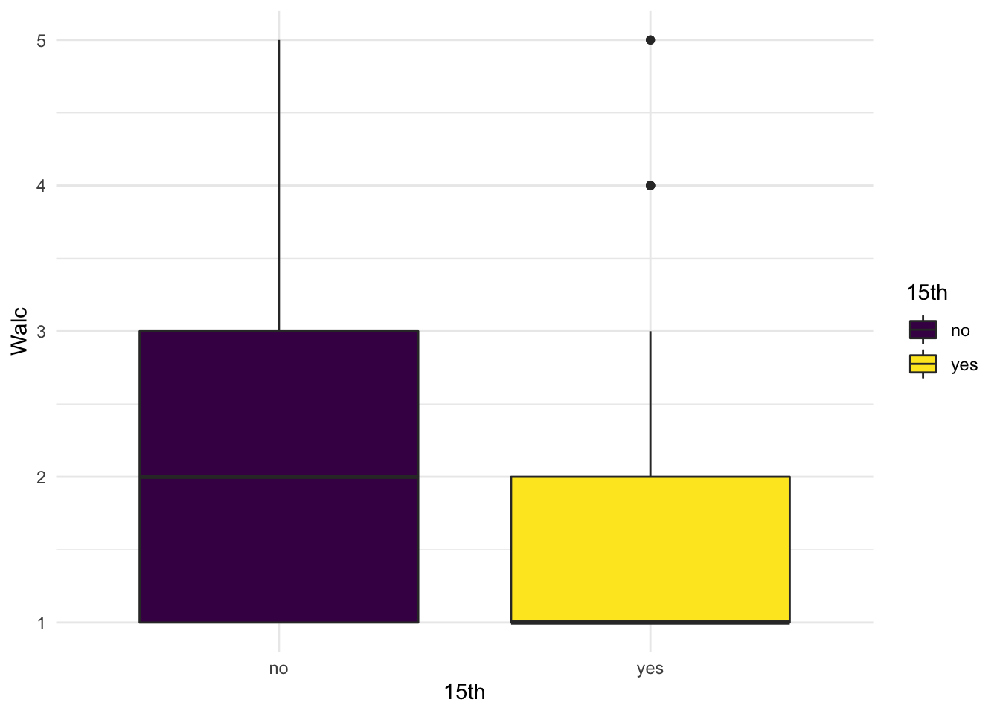
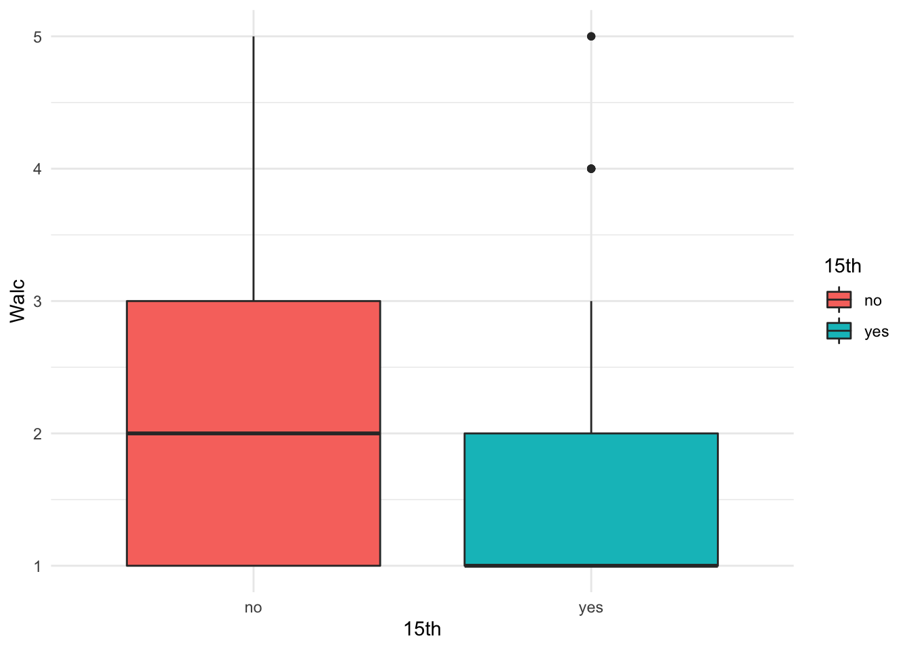
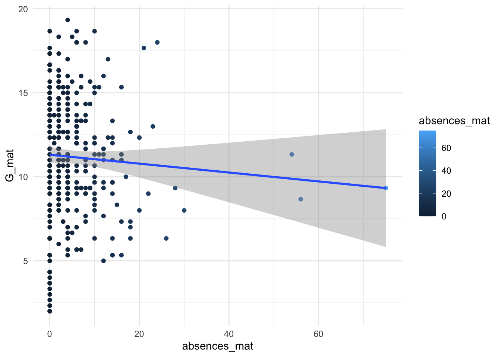

11 Статистики вывода: расчет статистического метода и интерпретация результатов
Проведен расчет выбранного статистического критерия с помощью выбранной функции
Вид полученных результатов понятен для интерпретации, и результаты согласуются с представлением о том, как они должны выглядеть
Результаты визуализированы, так, чтобы их было легче правильно воспринять
Результаты проинтепретированы и сделан вывод относительно статистической и экспериментальной гипотез
Итак, мы шли через весь чек-лист и готовились к самому главному – расчету выбранного статистического теста. Он даст нам несколько заветных цифр (значение самой статистики или коэффциента и p-value), по которым мы можем сделать вывод о связи между НП и ЗП, о различиях между группами или о вкладе какого-либо фактора в изменчивость наблюдаемых проявлений, в завимости от гипотезы.
Что мы сделали (в идеале):
- Сформулировали теоретическую гипотезу (даже несколько)
- Выбрали исследовательский метод, в котором ее можно проверить
- Перевели теоретическую гипотезу на язык исследования и сформулировали эмпирическую гипотезу
- Выбрали статистический метод, которым будем проверять гипотезу
- Получили представление, как будут выглядеть собранные данные после проведения исследования
- Собрали данные
- Предобработали данные
- Посмотрели на ЗП и НП, участвующие в нашей гипотезе, посчитали для них описательные статисики, сделали описательные визуализации, сравнили их с нашими ожиданиями
Теперь можем проводить расчет статистического метода!
11.1 p-value и сравнение с α
p-value - вероятность получить такие (или более выраженные) различия, если нулевая гипотеза верна.


11.2 Questionable and good research practices


 John, L. K., Loewenstein, G., & Prelec, D. (2012). Measuring the Prevalence of Questionable Research Practices With Incentives for Truth Telling. Psychological Science
John, L. K., Loewenstein, G., & Prelec, D. (2012). Measuring the Prevalence of Questionable Research Practices With Incentives for Truth Telling. Psychological Science
Использование сомнительных исследовательских практик (questionable research practices) значительно увеличивает вероятность сделать ложноположительный (false-positive) вывод в своем исследовани.
Чему, как правило, равна вероятность сделать ложноположительный вывод? Это уровень значимости \(\alpha\). Почему она может увеличиться, если мы поо умолчанию выбрали \(\alpha = 0.05\)?
Исследование, которое провели Simmons, Nelson, & Simonsohn, 2011 называется “False-positive psychology: Undisclosed flexibility in data collection and analysis allows presenting anything as significant”. В этом исследовании они осознанно применяли сомнительные исследовательские практики, считали статистические тесты с их учетом (например, выкинув одну из переменных), проводили много-много симуляций таких тестов и затем сравнивали результаты с теми, которые они получили бы, если бы проводили анализ по всем правилам. Самые впечатляющие результаты:
- Манипуляции с выбором зависимых переменных (тестировали две, но выбрали только одну) увеличивают вероятность ложноположительного вывода с 5% до 9.5% (и согласно другому исследованию, около 78% психологов так делали (John et a., 2012)!
- Манипуляции с выбором экспериментальных условий (тестировали в трех, но выбрали только два из них увеличивают вероятность ложноположительного вывода с 5% до 12.6% (42% исследователей скорее всего через это проходили (John et a., 2012)
- Манипуляции с размером выборки (optional stopping, посмотрели на данные после 20 испытуемых, если не значимо — стали добирать и смотреть после 21, 22, 23 и тд испытуемых) увеличивает вероятность ложноположительного вывода с 5% до 50% (62%-72% исследователей исследователей использовали такую практику (John et a., 2012)
- Комбинация (1) + (2) + (3) увеличивает вероятность ложноположительного вывода с 5% до 60.7%
Почему еще это плохо, не только для текущего исследования, но и для всей области? Во-первых, если в литературе появляется ложноположительный вывод — его сложно полностью опровергнуть, он остается в литературе практически во всех случаях. Исследователи продолжают целые линии экспериментов, основанные на ложноположительных результатах. Во-вторых, ложноположительные выводы стимулируют publication bias – публикацию только тех исследований, в которых подтвердились гипотезы. Выходит, что исследователи немного экстрасенсы и могут выбирать для исследований только те гипотезы, которые наверняка подтверядся. В-третьих, если ложноположительные резульататы в ветви исследований были обнаружены, это подрывают доверие ко всей линии.
Good research practices
- Решать, когда останавливать сбор данных, до начала эксперимента. Правило, на котором это решение основано, должно быть указано в статье (расчет выборки на основании statistical power, анализ данных с использованием sequential analysis etc).
- До эксперимента решать, на каком основании и по каким правилам будут производиться выбросы данных, и указывать это в статье.
- Принимать решение о том, как данные будут обрабатываться, до начала эксперимента.
- В статье указывать все переменные и все экспериментальные условия, которые участвовали в эксперименте (даже если они оказались незначимы)
- Пререгистрировать исследование (хотя бы для себя).
- Постоянно прокачивать навыки в статистике и анализе данных. Это база, верхней границы навыка не существует.

11.3 Расчет разных статистических методов для проверки гипотез
Начнем проверять с третьей гипотезы, чтобы идти от простого статистического метода к более сложным.
11.3.1 Проверка гипотезы 3: корреляционный тест и линейная регрессия
Первый вариант гипотезы 3 – о наличии линейной связи, проверяется корреляционным тестом и обычной линейной регрессией.
Гипотеза 3_a
Чем больше пропусков занятий, тем более низкий средний балл по предмету
Проверяем корреляцию НП и ЗП:
##
## Pearson's product-moment correlation
##
## data: G_mat and absences_mat
## t = -1.0401, df = 318, p-value = 0.2991
## alternative hypothesis: true correlation is not equal to 0
## 95 percent confidence interval:
## -0.1668011 0.0517444
## sample estimates:
## cor
## -0.05822595# cor.test(students$G_mat, students$absences_mat, method = 'pearson') эта запись эквивалентна предыдущей##
## Pearson's product-moment correlation
##
## data: G_por and absences_por
## t = -1.7923, df = 318, p-value = 0.07404
## alternative hypothesis: true correlation is not equal to 0
## 95 percent confidence interval:
## -0.207367985 0.009745291
## sample estimates:
## cor
## -0.1000016##
## Call:
## lm(formula = students$G_mat ~ students$absences_mat)
##
## Residuals:
## Min 1Q Median 3Q Max
## -9.3130 -2.1013 0.0045 2.4727 8.1262
##
## Coefficients:
## Estimate Std. Error t value Pr(>|t|)
## (Intercept) 11.31298 0.24196 46.76 <2e-16 ***
## students$absences_mat -0.02645 0.02544 -1.04 0.299
## ---
## Signif. codes: 0 '***' 0.001 '**' 0.01 '*' 0.05 '.' 0.1 ' ' 1
##
## Residual standard error: 3.559 on 318 degrees of freedom
## Multiple R-squared: 0.00339, Adjusted R-squared: 0.0002563
## F-statistic: 1.082 on 1 and 318 DF, p-value: 0.299111.3.2 Проверка гипотезы 3: ANOVA
Гипотеза 3_b
Студенты, у кого было от 0 до 5 пропусков, от 6 до 15 и больше 15 будут иметь разный средний балл по предмету
Эта гипотеза предполагает сравнение трех групп, тестируем ANOVA.
Сначала создадим новые переменные, чтобы перекодировать пропуски в группы:
students %>%
mutate(ansences_mat_groups = ifelse(absences_mat <=5, "less", ifelse(absences_mat <=15, "middle", "more"))) %>%
mutate(ansences_por_groups = ifelse(absences_por <=5, "less", ifelse(absences_por <=15, "middle", "more"))) -> students
kable(students[1:10,]) %>% scroll_box(width = "100%")| student | school | sex | age | address | famsize | Pstatus | Medu | Fedu | Mjob | Fjob | reason | guardian | traveltime | studytime | failures | schoolsup | famsup | paid_mat | activities | nursery | higher | internet | romantic | famrel | freetime | goout | Dalc | Walc | health | absences_mat | G1_mat | G2_mat | G3_mat | paid_por | absences_por | G1_por | G2_por | G3_por | G_mat | G_por | ansences_mat_groups | ansences_por_groups |
|---|---|---|---|---|---|---|---|---|---|---|---|---|---|---|---|---|---|---|---|---|---|---|---|---|---|---|---|---|---|---|---|---|---|---|---|---|---|---|---|---|---|---|
| id1 | GP | F | 18 | U | GT3 | A | 4 | 4 | at_home | teacher | course | mother | 2 | 2 | 0 | yes | no | no | no | yes | yes | no | no | 4 | 3 | 4 | 1 | 1 | 3 | 6 | 5 | 6 | 6 | no | 4 | 0 | 11 | 11 | 5.666667 | 7.333333 | middle | less |
| id2 | GP | F | 17 | U | GT3 | T | 1 | 1 | at_home | other | course | father | 1 | 2 | 0 | no | yes | no | no | no | yes | yes | no | 5 | 3 | 3 | 1 | 1 | 3 | 4 | 5 | 5 | 6 | no | 2 | 9 | 11 | 11 | 5.333333 | 10.333333 | less | less |
| id4 | GP | F | 15 | U | GT3 | T | 4 | 2 | health | services | home | mother | 1 | 3 | 0 | no | yes | yes | yes | yes | yes | yes | yes | 3 | 2 | 2 | 1 | 1 | 5 | 2 | 15 | 14 | 15 | no | 0 | 14 | 14 | 14 | 14.666667 | 14.000000 | less | less |
| id5 | GP | F | 16 | U | GT3 | T | 3 | 3 | other | other | home | father | 1 | 2 | 0 | no | yes | yes | no | yes | yes | no | no | 4 | 3 | 2 | 1 | 2 | 5 | 4 | 6 | 10 | 10 | no | 0 | 11 | 13 | 13 | 8.666667 | 12.333333 | less | less |
| id6 | GP | M | 16 | U | LE3 | T | 4 | 3 | services | other | reputation | mother | 1 | 2 | 0 | no | yes | yes | yes | yes | yes | yes | no | 5 | 4 | 2 | 1 | 2 | 5 | 10 | 15 | 15 | 15 | no | 6 | 12 | 12 | 13 | 15.000000 | 12.333333 | middle | middle |
| id7 | GP | M | 16 | U | LE3 | T | 2 | 2 | other | other | home | mother | 1 | 2 | 0 | no | no | no | no | yes | yes | yes | no | 4 | 4 | 4 | 1 | 1 | 3 | 0 | 12 | 12 | 11 | no | 0 | 13 | 12 | 13 | 11.666667 | 12.666667 | less | less |
| id8 | GP | F | 17 | U | GT3 | A | 4 | 4 | other | teacher | home | mother | 2 | 2 | 0 | yes | yes | no | no | yes | yes | no | no | 4 | 1 | 4 | 1 | 1 | 1 | 6 | 6 | 5 | 6 | no | 2 | 10 | 13 | 13 | 5.666667 | 12.000000 | middle | less |
| id9 | GP | M | 15 | U | LE3 | A | 3 | 2 | services | other | home | mother | 1 | 2 | 0 | no | yes | yes | no | yes | yes | yes | no | 4 | 2 | 2 | 1 | 1 | 1 | 0 | 16 | 18 | 19 | no | 0 | 15 | 16 | 17 | 17.666667 | 16.000000 | less | less |
| id10 | GP | M | 15 | U | GT3 | T | 3 | 4 | other | other | home | mother | 1 | 2 | 0 | no | yes | yes | yes | yes | yes | yes | no | 5 | 5 | 1 | 1 | 1 | 5 | 0 | 14 | 15 | 15 | no | 0 | 12 | 12 | 13 | 14.666667 | 12.333333 | less | less |
| id11 | GP | F | 15 | U | GT3 | T | 4 | 4 | teacher | health | reputation | mother | 1 | 2 | 0 | no | yes | yes | no | yes | yes | yes | no | 3 | 3 | 3 | 1 | 2 | 2 | 0 | 10 | 8 | 9 | no | 2 | 14 | 14 | 14 | 9.000000 | 14.000000 | less | less |
Применим тест
Классическое выполнение ANOVA в R:
## Df Sum Sq Mean Sq F value Pr(>F)
## ansences_mat_groups 2 22 10.87 0.857 0.425
## Residuals 317 4021 12.68## Df Sum Sq Mean Sq F value Pr(>F)
## ansences_por_groups 2 57 28.63 2.277 0.104
## Residuals 317 3985 12.57ANOVA в R c помощью более тонко настраеваемо1:
## Df Sum Sq Mean Sq F value Pr(>F)
## ansences_mat_groups 2 22 10.87 0.857 0.425
## Residuals 317 4021 12.68## Df Sum Sq Mean Sq F value Pr(>F)
## ansences_por_groups 2 57 28.63 2.277 0.104
## Residuals 317 3985 12.5711.3.3 Проверка гипотезы 1: тест Манна-Уитни
Наши гипотезы трансформировались в:
Гипотеза 1_a:
студенты возраста 15, 16, 17 лет будут выбирать меньшие значения переменной Walc, чем студенты 18 лет и старше
Гипотеза 1_b:
студенты возраста 15 лет будут выбирать меньшие значения переменной Walc, чем студенты 16 лет и старше
Чтобы их проверить, перекодируем переменную age в новые переменные:
students %>%
mutate(adult = ifelse(age >= 18, "yes", "no")) %>%
mutate(`15th` = ifelse(age == 15, "yes", "no")) -> students #создали переменную, которая делит студентов на совершеннолетних и нет
kable(students[1:10,]) %>% scroll_box(width = "100%")| student | school | sex | age | address | famsize | Pstatus | Medu | Fedu | Mjob | Fjob | reason | guardian | traveltime | studytime | failures | schoolsup | famsup | paid_mat | activities | nursery | higher | internet | romantic | famrel | freetime | goout | Dalc | Walc | health | absences_mat | G1_mat | G2_mat | G3_mat | paid_por | absences_por | G1_por | G2_por | G3_por | G_mat | G_por | ansences_mat_groups | ansences_por_groups | adult | 15th |
|---|---|---|---|---|---|---|---|---|---|---|---|---|---|---|---|---|---|---|---|---|---|---|---|---|---|---|---|---|---|---|---|---|---|---|---|---|---|---|---|---|---|---|---|---|
| id1 | GP | F | 18 | U | GT3 | A | 4 | 4 | at_home | teacher | course | mother | 2 | 2 | 0 | yes | no | no | no | yes | yes | no | no | 4 | 3 | 4 | 1 | 1 | 3 | 6 | 5 | 6 | 6 | no | 4 | 0 | 11 | 11 | 5.666667 | 7.333333 | middle | less | yes | no |
| id2 | GP | F | 17 | U | GT3 | T | 1 | 1 | at_home | other | course | father | 1 | 2 | 0 | no | yes | no | no | no | yes | yes | no | 5 | 3 | 3 | 1 | 1 | 3 | 4 | 5 | 5 | 6 | no | 2 | 9 | 11 | 11 | 5.333333 | 10.333333 | less | less | no | no |
| id4 | GP | F | 15 | U | GT3 | T | 4 | 2 | health | services | home | mother | 1 | 3 | 0 | no | yes | yes | yes | yes | yes | yes | yes | 3 | 2 | 2 | 1 | 1 | 5 | 2 | 15 | 14 | 15 | no | 0 | 14 | 14 | 14 | 14.666667 | 14.000000 | less | less | no | yes |
| id5 | GP | F | 16 | U | GT3 | T | 3 | 3 | other | other | home | father | 1 | 2 | 0 | no | yes | yes | no | yes | yes | no | no | 4 | 3 | 2 | 1 | 2 | 5 | 4 | 6 | 10 | 10 | no | 0 | 11 | 13 | 13 | 8.666667 | 12.333333 | less | less | no | no |
| id6 | GP | M | 16 | U | LE3 | T | 4 | 3 | services | other | reputation | mother | 1 | 2 | 0 | no | yes | yes | yes | yes | yes | yes | no | 5 | 4 | 2 | 1 | 2 | 5 | 10 | 15 | 15 | 15 | no | 6 | 12 | 12 | 13 | 15.000000 | 12.333333 | middle | middle | no | no |
| id7 | GP | M | 16 | U | LE3 | T | 2 | 2 | other | other | home | mother | 1 | 2 | 0 | no | no | no | no | yes | yes | yes | no | 4 | 4 | 4 | 1 | 1 | 3 | 0 | 12 | 12 | 11 | no | 0 | 13 | 12 | 13 | 11.666667 | 12.666667 | less | less | no | no |
| id8 | GP | F | 17 | U | GT3 | A | 4 | 4 | other | teacher | home | mother | 2 | 2 | 0 | yes | yes | no | no | yes | yes | no | no | 4 | 1 | 4 | 1 | 1 | 1 | 6 | 6 | 5 | 6 | no | 2 | 10 | 13 | 13 | 5.666667 | 12.000000 | middle | less | no | no |
| id9 | GP | M | 15 | U | LE3 | A | 3 | 2 | services | other | home | mother | 1 | 2 | 0 | no | yes | yes | no | yes | yes | yes | no | 4 | 2 | 2 | 1 | 1 | 1 | 0 | 16 | 18 | 19 | no | 0 | 15 | 16 | 17 | 17.666667 | 16.000000 | less | less | no | yes |
| id10 | GP | M | 15 | U | GT3 | T | 3 | 4 | other | other | home | mother | 1 | 2 | 0 | no | yes | yes | yes | yes | yes | yes | no | 5 | 5 | 1 | 1 | 1 | 5 | 0 | 14 | 15 | 15 | no | 0 | 12 | 12 | 13 | 14.666667 | 12.333333 | less | less | no | yes |
| id11 | GP | F | 15 | U | GT3 | T | 4 | 4 | teacher | health | reputation | mother | 1 | 2 | 0 | no | yes | yes | no | yes | yes | yes | no | 3 | 3 | 3 | 1 | 2 | 2 | 0 | 10 | 8 | 9 | no | 2 | 14 | 14 | 14 | 9.000000 | 14.000000 | less | less | no | yes |
Итак, пойдем по алгоритму.
В тесте Гипотезы 1_a ЗП – порядковая, ЗП может принимать 5 значений – значит, я рассматриваю ее как количественную. Далее, одна НП, и наша гипотеза – о сравнении двух групп между собой. Эти группы независимы (тестируются оценки разных студентов, никак не связанных друг с другом). Значит, будем использовать тест Манна-Уитни (Mann-Whitney test)
##
## Wilcoxon rank sum test with continuity correction
##
## data: students$Walc by students$adult
## W = 8539.5, p-value = 0.676
## alternative hypothesis: true location shift is greater than 0В тесте Гипотезы 1_b ЗП – порядковая, ЗП может принимать 5 значений – значит, я рассматриваю ее как количественную. Далее, одна НП, и наша гипотеза – о сравнении двух групп между собой. Эти группы независимы (тестируются оценки разных студентов, никак не связанных друг с другом). Значит, будем использовать тест Манна-Уитни (Mann-Whitney test)
##
## Wilcoxon rank sum test with continuity correction
##
## data: students$Walc by students$`15th`
## W = 11326, p-value = 7.892e-05
## alternative hypothesis: true location shift is greater than 0Чем отличаются результаты тестов?
11.3.4 Проверка гипотезы 2: корреляционный тест (метод Спирмена)
Проведем тест для следующей гипотезы.
Гипотеза 2
Чем ниже студенты оценивают качество семейных отношений famrel, тем выше они отмечают частоту употребления алкоголя Walc
Пойдем также по алгоритму.
ЗП – порядковая, ЗП может принимать 5 значений – значит, я рассматриваю ее как количественную. Одна независимая переменная, так же порядковая, то есть точно непараметрическая. Наша гипотеза не о сравнении групп, об ассоциативной (корреляционной) связи. Значит, следует использовать либо ранговую корреляцию Спирмена, либо порядковую логистическую регрессию (если я хочу, чтобы связь имела предсказательную силу).
Начнем с простого – корреляции Спирмена
## Warning in cor.test.default(students$famrel, students$Walc, method =
## "spearman"): Cannot compute exact p-value with ties##
## Spearman's rank correlation rho
##
## data: students$famrel and students$Walc
## S = 6173557, p-value = 0.0196
## alternative hypothesis: true rho is not equal to 0
## sample estimates:
## rho
## -0.13042311.3.5 Проверка гипотезы 2: порядковая логистическая регрессия
Попробуем порядковую логистическую регрессию
##
## Attaching package: 'MASS'## The following object is masked from 'package:dplyr':
##
## select## Call:
## polr(formula = as.factor(Walc) ~ as.factor(famrel), data = students,
## Hess = TRUE)
##
## Coefficients:
## Value Std. Error t value
## as.factor(famrel)2 -0.6749 0.9380 -0.7195
## as.factor(famrel)3 -0.3941 0.8104 -0.4863
## as.factor(famrel)4 -0.7474 0.7870 -0.9497
## as.factor(famrel)5 -1.0775 0.7971 -1.3518
##
## Intercepts:
## Value Std. Error t value
## 1|2 -1.1787 0.7757 -1.5196
## 2|3 -0.2620 0.7751 -0.3381
## 3|4 0.7370 0.7814 0.9432
## 4|5 1.9655 0.7975 2.4645
##
## Residual Deviance: 920.8895
## AIC: 936.8895И добавим p-value
ctable <- coef(summary(famrel_ordered_model))
p <- pnorm(abs(ctable[, "t value"]), lower.tail = FALSE) * 2
ctable <- cbind(ctable, "p value" = p)
ctable## Value Std. Error t value p value
## as.factor(famrel)2 -0.6749367 0.9380228 -0.7195313 0.47181365
## as.factor(famrel)3 -0.3940742 0.8103672 -0.4862908 0.62676098
## as.factor(famrel)4 -0.7474178 0.7870231 -0.9496770 0.34227639
## as.factor(famrel)5 -1.0774883 0.7970952 -1.3517685 0.17644937
## 1|2 -1.1787296 0.7756805 -1.5196070 0.12860978
## 2|3 -0.2620218 0.7750710 -0.3380616 0.73531675
## 3|4 0.7369875 0.7813711 0.9431979 0.34557970
## 4|5 1.9654590 0.7975037 2.4645141 0.0137199211.4 Визуализация результатов
Несмотря на то, что визуализация результатов стоит последний пунктом, это очень важный этап. Кроме того, он может использоваться и до получения результатов, чтобы прикинуть, какими получатся результаты еще до проведения статистического теста.
Визуализации для гипотезы 1

 Визуализации для гипотезы 2
 Визуализации для гипотезы 3
Визуализации для гипотезы 3
students %>%
ggplot(aes(x=absences_mat, y = G_mat)) +
geom_point(aes(colour = absences_mat)) +
geom_smooth(method="lm") +
theme_minimal()## `geom_smooth()` using formula 'y ~ x'
Визуализируем матрицу корреляций в коррелограмму